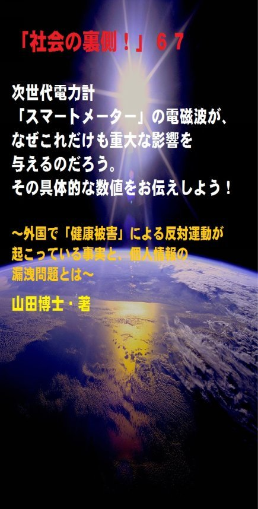

| 「社会の裏側！」６７......次世代電力計「スマートメーター」の電磁波が、なぜこれだけも重大な影響を与えるのだろう。その具体的な数値をお伝えしよう！: 外国で「健康被害」による反対運動が起こっている事実と、個人情報の漏洩問題とは | |
| 山田博士 | |
| kominitesyuppankai (2017) | |

「社会の裏側！」６７
次世代電力計「スマートメーター」の電磁波が、なぜこれだけも重大な影響を与えるのだろう。その具体的な数値をお伝えしよう！
～外国で「健康被害」による反対運動が起こっている事実と、個人情報の漏洩問題とは～
The social backside67
山田博士・著
★本書の著作権について
皆さんにはまったく関係ないことだと思いますが、複写、転送、抜粋、転載など、著作権侵害にあたる行為は絶対になさらないで下さい。本書の著作権は、山田博士にあります。今後、皆さんのお役に立ちたい活動が出来なくなりますので、その点、ぜひよろしくお願いします。ささささ、それでは、本書をどうぞ、ごゆっくりご覧下さい。
★概要
ぼくは、この「スマートメーター」の問題点としては、現時点では大きく三つ挙げられるかな、と思っています。
一つは、ご存じ電磁波の問題。
二つは、悲惨な火事を引き起こす問題。
三つは、大切な個人情報漏洩（ろうえい）の問題。
一番最初の問題として、以前にも、スマホやケータイの電磁波について述べたことがありますが、この「スマートメーター」も、けっしてそれに劣らない問題が控えております。
そしてその電磁波による健康被害のため、事実、諸外国では、この「スマートメーター」の設置反対運動が起きているわけですね。
火の無い所に煙は立ちません。
日本では、なんともノンビリしたもの。
なにしろ、この「スマートメーター」の名前自体、ポピュラーになっていないほど、マスコミはこの現実を巧妙に隠蔽（いんぺい）してきました。
海外では、健康被害が多発しております。
それに、大手電力会社１０社たちは、この通信機能がついた次世代電力計「スマートメーター」を、なんと、２０２４年度末までに管内のすべての家庭に設置するという計画をまとめました。
国民がこの本質に気づく前に、超スピードで設置してしまえ......ということでしょうか。
原発のときと、同じ構図ですよね。
あのときも、国民の大部分の人たちは、原発？まあ、火力発電所のようなものじゃないの？......なんてノンビリしている間に、この狭い日本列島に５２基も作られてしまったのでしたね。
そして気づいたときは、あのフクシマが起こり、みんなあわてふためいたわけです。
いったん出来てしまったものは、そうそう元の状態に戻すことはできません。
大きなエネルギーが必要になります。
だって、そこで働き、暮らす人も出てきますからね。
だから今回も、企業たちは、国民になるべくこれの実態を知らせないように仕向け、「アッという間に」、全家庭にこの「スマートメーター」を設置してしまおうとしているわけなんですね。
電力会社１０社は、そのため、当初決めていたこの「スマートメーター」設置の計画を、かなり前倒しでいま進めております。
でも、こんなもの、ぼくたち国民は誰も電力会社様にお願いした覚えはございませぬ。
ぜひ、本書をご覧下さい。
そして、「社会の裏側！」をのぞいてみて下さい。
あなたの行動を、期待しています。
★目次
★（第１章）
一般家庭には、生まれたばかりの赤ちゃんも、乳児も、幼児も、ご老人も、病人も、それに一番大切な「あなた自身」もいますよね。その場所へ、強制的に、「強烈な電磁波の発生源」が設置される。あなた、これ、なんとも思いませんか......
★（第２章）
大手電力会社１０社たちは、この通信機能がついた次世代電力計「スマートメーター」を、なんと、２０２４年度末までに管内のすべての家庭に設置するという計画をまとめたのです......
★（第３章）
ぼくは、この「スマートメーター」の問題点としては、現時点では次の三つが挙げられるかな、と思っています。でも、このどれを見ても深刻な内容ばかり。それなのに、日本では、なんともノンビリしたもので......
★（第４章）
「スマートメーター」から、これだけの電磁波が出ています。その具体的な数値をぜひご覧下さい。そして、日本の「安全限界値」がカナダやアメリカと比べていかに高いのか。それなのに、外国と同様に「スマートメーター」を全家庭に広げるとはいったい......
★（第５章）
火災の問題も、馬鹿にできません。と言うのは、実際、このために死者まで出ていて提訴問題にまで発展しているわけですね。そのほか個人情報の問題もあります。それは......
★「社会の裏側！」シリーズの既刊本案内
★プロフィール
（最初に、恥ずかしながら、ぼくの紹介を簡単に述べておきます）
やまだ・ひろし。
１９４７年、福井県小浜（おばま）市生まれ。
食生態学者。元大学名誉教授。日本危機管理学会会員。
山田博士いのち研究所主宰。
ベトナム戦争の終わったちょうどその年１９７５年に、マンガストーリィと商品の実名で食べものや環境を取り上げた小冊子「暮しの赤信号」を発行する。実名で取り上げたため、社会に衝撃を与えた。各号１０万部単位で読まれ、隠れたベストセラーなどと、新聞などで何度も報道される。
同じ年、偶然にも有吉佐和子さんの「複合汚染」が発表され、この小冊子はその動きも受けて多くの学校の副読本でも活用された。
文化放送の「なっちゃこワイド」や、ＮＨＫ海外放送「ある日本人」でお話しをしたり、ギター弾き語り公演や、各自治体や学校などへの講演なども続けている。
現在は、メルマガ「暮しの赤信号」（「短縮版」と「完全版」の２種）を発行し、企業名や商品名などを公表して、世界中のかたに喜ばれている。
その読者層は、医師や看護師、栄養士、教師、会社経営者、自治体など、国の内外を問わず、多くの読者たちから毎日のように便りが届いている。年齢層も、１０代から８０代まで、さまざまだ。
また、ほぼ毎月第３土曜日に、東京の恵比寿でお茶飲み会「博々亭（ひろびろてい）」を開催。遠路から毎回読者が駆けて来ている。参加条件はメルマガ読者に限定だが、参加費用は無料だ。
このメルマガは、まぐまぐ！を始め３つのスタンドの合計で、数千部発行しているが、もしご関心のあるかたは、ご覧いただくと嬉しい。読者登録をされれば、毎回、無料でお手元に届く。月～水は本誌が、木～日は『３分で分かる！今週のワンショット「暮しの赤信号」』が、それぞれ早朝５時に届けられる。その時刻を楽しみにしている読者も多いとか。
短縮版メルマガ「暮しの赤信号」は無料。
下記で登録されれば、毎回、自動的に配信される。
「短縮版」（無料です）→ http://goo.gl/AFx95J
著書に 『脱コンビニ食！』（平凡社新書）
『危険な食品』（宝島社新書）
『その食品はホンモノですか？』（三才ブックス）
『ひとり月１万円食費で幸せ生活』（ＷＡＶＥ出版）
『最新 危ないコンビニ食』（現代書館）
『あぶないコンビニ食』（三一新書）
『続 あぶないコンビニ食』（同）
『外食店健康度ランキング』（同）
『山田博士の暮しの赤信号』第１巻～第５巻（亜紀書房）
『暮しの赤信号』小冊子＆ＣＤ－ＲＯＭ版全２３巻
『月１万少々の食費で、ザクザクと健康を稼ぐぼくの方法』
『いのち運転"即実践"マニュアル』各話
『山田流・時事呆談』各話
『セーラー服と警察犬』（小説）各巻......などがある。
山田のホームページ http://yamadainochi.com/
★はじめに......
こんにちは。
山田博士（やまだ・ひろし）です。
本書をご覧いただき、嬉しく思っております。
この内容をご覧いただくことで、少しでもあなたが「社会の裏側！」の流れにお気づきになり、そしてたとえ１ミリでもいい、即、行動されることを願っております。
ただ読むだけでは、誰でもできます。
それでは、あなたの身の回りの状況は石のように動きません。
本書をご覧になって、これは......と思うことがあれば、即行動なさって下さい。
お願いします。
その小さな行動の積み重ねこそが、あなたの明日を、１２色のバラ色で輝かせることになると信じております。
なお、この「社会の裏側！」は、今後もシリーズとして発刊して行くつもりです。
もしご関心があれば、「社会の裏側！」という名前で、アマゾンで検索してお調べ下さい。
さまざまな問題の社会の裏側！を詳しく、しかも楽しく述べております。
ぼくの名前で検索されても、見つかるのではないかと思います。
もし、「ＰＤＦ版」でご希望の場合は、ぼくの事務局まで遠慮なくお問い合わせ下さい。事務局→ http://goo.gl/t12Yx
ささささ、能書きはそこまでにします。
どうぞ、笑顔で、頁をお繰（く）り下さい。
お楽しみに！
山田博士
★（第１章）
一般家庭には、生まれたばかりの赤ちゃんも、乳児も、幼児も、ご老人も、病人も、それに一番大切な「あなた自身」もいますよね。その場所へ、強制的に、「強烈な電磁波の発生源」が設置される。あなた、これ、なんとも思いませんか......
あなた、「スマートメーター」って、ご存じ？
え？
そんなもの、私、いままで食べたこともないって？
おっとととと......あなた、相変わらず食いしん坊ですねえ。
これは、残念ながら、食べものや飲みものじゃありません。
スマホと名前はどこか似ていますが、もちろん、新型のスマホでもありません。
と言うより、スマホより、もっともっと家族の体に深刻な影響を与えかねないもの......と言っていいかもしれませんね。
と言いますのは、「強力な電磁波の発生源を、すべての家庭に強制的に置くシステム」......というものなんですから。
コトは重大です。
だって、一般家庭には、生まれたばかりの赤ちゃんも、乳児も、幼児も、ご老人も、病人も、それに一番大切な「あなた自身」もいます。
家庭にいる弱者にとくに影響が行くのはもちろんですが、あなたのような元気のいい人にも同様な結果を生みます。
そのため、外国ではいま、その排斥（はいせき）運動が起こっているほどなんですね。
日本のマスコミは、そんなこと死んでも言いませんが......(笑)。
この「スマートメーター」。
いったい、これは、どういうものなのでしょうか。
いま初めて、この名前をお聞きになられたかたもいるかもしれませんが、今後しばらく、この名前は、あなたの周囲で頻繁（ひんぱん）に出てくることになります。
ぜひ覚えておいて下さい。
だって、ライフライン（電気・ガス・水道などの公共公益設備や電話などの生活に必須のインフラ設備のこと）の問題ですから。
もし、これらが無くなれば、軟弱なぼくたちは１日も生きては行けません。
だからそのために、こうしたインフラに対しては、ぼくたちが働いた血と涙のお金の中から「税金」という形で拠出しているわけなんですね。
ところが、そのライフラインの一つが、この「スマートメーター」なんてものに置き換わったとしたら......。
ささささ、以下をどうぞ、ご覧下さい。
つまり......。
★（第２章）
大手電力会社１０社たちは、この通信機能がついた次世代電力計「スマートメーター」を、なんと、２０２４年度末までに管内のすべての家庭に設置するという計画をまとめたのです......
この「スマートメーター」とは、東京電力の資料によれば、下記のようなもの。
つまり......ちょっと固い言葉が続きますが......。
「毎月の検針業務の自動化 や HEM S 等を通じた電気使用状況の見える化を可能にする電力量計。
スマートメーターの導入により、電気料金メニューの多様化や社会全体の省エネ化への寄与、電力供給における将来的な設備投資の抑制等が期待できる」
ふふふ......なんとも固い言葉ですが、つまり、「通信機能がついた電力量計」ということでしょうか。
上記で、 「 HEM S （ヘムス）」とありますが、これは 「 Home Energy Management Syste m （ホーム エネルギー マネジメント システム）」の略で、別に何も難しい意味ではありません。
つまり、家庭で使うエネルギーを節約するための管理システムということでしょう。
企業や政府は、いつも新しいものを国民の目の前に出すときには、格好のいい、そして響きのいい言葉を使います。
上述のように、「家庭で使うエネルギーを節約するため」なんて言われると、ぼくのようにノホホンとした人間なら、「へえ、節約が自動的にできるんだあ。いいんじゃないのお」と、コロリと言っしまいそう。
でも、そうそう、いつもコロリとばかりは、しておれませぬ(笑)。
大手電力会社１０社たちは、この通信機能がついた次世代電力計「スマートメーター」を、なんと、２０２４年度末までに管内のすべての家庭に設置するという計画をまとめました。
国民がこの本質に気づく前に、超スピードで設置してしまえ......ということでしょうか。
原発のときと、同じ構図ですよね。
あのときも、国民の大部分の人たちは、原発？まあ、火力発電所のようなものじゃないの？......なんてノンビリしている間に、この狭い日本列島に５２基も作られてしまったのでしたね。
そして気づいたときは、あのフクシマが起こり、みんなあわてふためいたわけです。
そして、西日本なら安心だとか......(笑)。
なあに、いまは、西日本にも、中日本にも、東日本にも、どこにでも原発があります。
いったん出来てしまったものは、そうそう元の状態に戻すことはできません。
大きなエネルギーが必要になります。
だって、そこで働き、暮らす人も出てきますからね。
だから今回も、企業たちは、国民になるべくこれの実態を知らせないように仕向け、「アッという間に」、全家庭にこの「スマートメーター」を設置してしまおうとしているわけなんですね。
電力会社１０社は、そのため、当初決めていたこの「スマートメーター」設置の計画を、かなり前倒しでいま進めております。
でも、こんなもの、ぼくたち国民は誰も電力会社様にお願いした覚えはございませぬ。
だけど、先述したように、この「スマートメーター」の普及を急ぐ政府の要請にも応じた各社は、この設置時期を大幅に前倒ししました。
そして、遅くても●●年代には、国内のすべての家庭で、この「スマートメーター」が動くことになります（●●は下記の設問を）。
もう、ぼくなど、ふだんでも呆（あき）れることが多くて口がポッカ～ンと開いてはいるのですが、さらに開いて、ポッカ～ンです。
こんなことが、どうして許されるのです？
国民が知らぬ間に。
企業側からすれば、この「スマートメーター」には通信機能がありますから、各家庭と電力会社の間で、電気の利用状況などを素早くやりとりできるわけですね。
なにしろ、電気の使用量を「３０分ごとに把握できる」と言います。でも、あとで述べるように、アメリカの市民団体が実際に調べた結果では、なんと１分間に何回も......。
だから、電力会社側としては、多様な料金メニューを作ることもできるわけ。
そして、これも電力会社側の言い分ですが、「利用者側は、節電に役立つメニュを選んだりできて、電気代を抑えることもできる」というわけなんですね。
これらのために、政府も、電力会社に導入を急ぐよう求めていたわけです。
だけど、ちょ、ちょっと待って下さい。
それだけ「いいことばかり」なのでしょうか。
本当に、国民にとっては「電気代が節約でき、節電に役立つメニュを選ぶ」ことができるのでしょうか。
オール電化を進めてきた電力会社たちの過去の姿が、なんとなくダブってしまうのは、ぼくだけなのでしょうか。
アメリカでは、この「スマートメーター」がかなりの割合で設置されてしまったのですが、いま当地では大問題となり、その反対運動の輪が、全米で広がっております。
いったい、どういうことなのか。
★（第３章）
ぼくは、この「スマートメーター」の問題点としては、現時点では次の三つが挙げられるかな、と思っています。でも、このどれを見ても深刻な内容ばかり。それなのに、日本では、なんともノンビリしたもので......。
ぼくは、この「スマートメーター」の問題点としては、現時点では大きく三つ挙げられるかな、と思っています。
一つは、ご存じ電磁波の問題。
二つは、悲惨な火事を引き起こす問題。
三つは、大切な個人情報漏洩（ろうえい）の問題。
一番最初の問題として、以前にも、スマホやケータイの電磁波について述べたことがありますが、この「スマートメーター」も、けっしてそれに劣らない問題が控えております。
そしてその電磁波による健康被害のため、事実、諸外国では、この「スマートメーター」の設置反対運動が起きているわけですね。
火の無い所に煙は立ちません。
日本では、なんともノンビリしたもの。
なにしろ、この「スマートメーター」の名前自体、ポピュラーになっていないほど、マスコミはこの現実を巧妙に隠蔽（いんぺい）してきました。
海外では、健康被害が多発しております。
たとえば......。
・この「スマートメーター」が設置されてから一晩中、眠れない。
・近所の家に設置されてから、頭痛、めまい、動悸（どうき）、不安感などに悩まされている。
・常に耳鳴りがし、家族も頭痛を訴えている。
・外出すると体調は良くなるが、家に戻ると再発する......などなど（出所： 「 EMF-safety networ k 」より）。
まあ、その電磁波についても、この際ですから、ここで少しだけ述べておきましょうか。
以前にもこの「時事呆談」で述べたことはありますが、それに加えてさらに詳しいことを述べてみます。
この「電磁波」とは、なんとなく難しそうな響きですが、ごくごく簡単に言いますと、「電波」のことなんですね。
電波なら、きっと多くのかたは、なんとなく理解できるのではないでしょうか。
そうですよね。
ただ、その電波も、周波数の違いやエネルギーの違いによって、さまざまな種類に分類されてはいるんです。
その周波数が高い電磁波としてよく知られているものとしては、原発のガンマ線、あるいはレントゲン撮影のときのエックス線などがあります。
これは、もうご存じですよね。
その反対に、周波数の低い電磁波としては、送電線や家電の極低周波電磁波があります。
まあ、もっと厳密に言いますと、その送電線の極低周波よりも、さらに低い「シューマン共振・電磁波」と呼ばれる、自然界の電磁波も存在するわけですね。
だから、生体としての人間が大昔から体に受けてきているのは、この「シューマン共振・電磁波」のほうだけと言えませんか。
そして、これらに対しては、人体は完全に順応していると言っていい。
それに反して、上述したような「人工の電磁波」は、過去ぼくたちが体験していないわけですから、今後、健康にどのような影響が出てくることか分かりません。
これは、食べものと同じです。
人間が人工的に作ったものは、いまのぼくたち自身が人体実験をしているわけですね。
時間が数百年や数千年とは経っていないわけですから、その危険性などは、誰にも分からない。
それとまったく同じことなんです。
今回のこの「スマートメーター」を使って、上述したような症状、つまり「頭痛、めまい、動悸」などが起こっているというのは、自然がぼくたちに重大な警告を発しているのではありませんか。
その「スマートメーター」が、あなたに叫んでいるわけです。
「お～い、アンさんよお。まだ気がつかへんのかよ」とね。
あ、すみません、女性のかたへなら、「お～い、ご婦人の皆さまよお」でした(笑)。
さらに、これらの電磁波は、いまの日本では、学術的には二つに分けられています（まああとで述べますように、これはあまり意味がなくなってはいるのですが）。
それは、「電離放射線」と「非電離放射線」。
前者は、物質を構成している分子や原子をバラバラにする電離作用がある電磁波のため、遺伝子を破壊してしまうんですね。
これに対して後者の「非電離放射線」には、そのような働きはないとされてきたのですが、どうも最近は、フリーラジカル効果などの類似（るいじ）作用があることが分かってきたようです。
つまり、こうして二つに分けること自体、ナンセンスとなり、電磁波そのものがどうなのか......ということになってきたわけです。
つまり、「電離放射線」も「非電離放射線」も危ない......というのが定説になってきました。
このようなことも、過去の情報だけにしがみついていると分からなくなります。
以前なら、「非電離放射線」だったらいいじゃないか......となっていたわけですから。
事実、２０１１年の５月に、ＷＨＯ（世界保健機関）傘下の世界ガン研究機関 （ IAR C ）が、極低周波（２００１年）とマイクロ波（２０１１年５月）に、発ガン性がある可能性を認定していますよね。
これは大変な事実です。
スマホやケータイも、マイクロ波ですから。
つまり、いままで日本では、「電離放射線」を放射線と呼んでおり、「非電離放射線」を電波などと呼んで、区別していたわけです。
電波なんて言えば、なんとなく危なくないように思うじゃありませんか(笑)。
ところが、欧米ではすべてが「電磁波」なんですね。
つまり、同時に放射線の仲間でもあるわけなんです。
だから、たとえいままで安全だとされていた「極低周波電磁波」と白血病の関係さえ取りざたされているほど。
日本だけでしょうね。
まあ、ぼくのように、これだけも電磁波についてノンビリしているのは。
とくにヨーロッパ諸国は、原発についても、「遺組み」(遺伝子組み換え)についても、「環ホル」（環境ホルモン）についても、日本よりずっと先を走っているように思えるのは、ぼくだけなのでしょうか。
もちろんぼくは、いつも言っておりますが、けっして日本を自虐的（じぎゃくてき）に見ているわけではありません。
いやむしろ、日本こそ、これからの世界を幸せにする主役であるべきだなあ......なんて、大きなことをいつも叫んでおります(笑)。
だからこそ、こうした現実を直視すると、本当に情けなくなるわけですね。
どうぞ、ぼくの真意をお汲（く）み下さい。
さて次に、この「スマートメーター」から強烈な電磁波が出ていることを「具体的に」述べておきたいと思います。
そして、そんなものを、子どももいる一般家庭に設置していいものかどうか。
★（第４章）
「スマートメーター」から、これだけの電磁波が出ています。その具体的な数値をぜひご覧下さい。そして、日本の「安全限界値」がカナダやアメリカと比べていかに高いのか。それなのに、外国と同様に「スマートメーター」を全家庭に広げるとはいったい......。
次に、この「スマートメーター」から、どれだけの電磁波が出ているのか、具体的に数字を挙げておきましょう。
アメリカのカリフォルニア州の電力・ガス供給会 社 PG& E は、メーターから約３ ０ c m の距離で 、 8.8µW/cm 2 と発表しています。
（山田注 ： µW/cm 2 とは、１平方センチメートル当たり１マイクロ ワットのことです。１マイクロワットとは、１００万分 の１ワットのこと）
また、カリフォルニア州科学技術評議会 ( CCS T )の報告では、約３ ０ c m で 180µW/cm 2 ですので、上述の約２０倍です。
いったい、どちらが正しいのでしょうか。
あるいは、測定方法に違いがあるのでしょうか。
セイジ・アソシエイツ発表（セイジ報告）では、約２７． ５ c m で 、 140µW/cm 2 としていますので、これら３者の評価には差がありますよね。
なお、欧州評議会 ( Co E )は，当面の目標として 、 0.1µW/cm 2 以下にするように、加盟国に勧告しています。
かなり、低い数値ですよね。
そして日本。
日本の電力会社は......えっと......その被曝（ひばく）量を公表してはおりません(笑)。
あ、こんなところで笑っていては、いけないんですが、なんとも情けなくて、その情けなさの顔を、笑ってごまかしております。
でも、赤ちゃんが寝ている壁の裏に、そのメーターがあったり、とくに集合住宅の場合などいくつもそこにこの「スマートメーター」が並んでいたりする場合もありますよね。
とくに赤ちゃんは、大人とは異なり、ごく低い値でも影響しますので、ぼくは非常に心配です。
家にいて、危ない......なんてね。
ふふふ......日本の政府は、日本人のいのちをいかにも安く見積もっているわけですね(笑。あ、また情けなくて笑ってしもた)。
でも、この「安全限界値」は、現在の科学で、「健康に害があるとされる値」の、数万倍でもあることを、どうぞお忘れなく。
このような「安全限界値」を振り回されたのでは、たまりません。
そうそう、ちなみに、『バイオイニシアティブ報告書２０１２』という報告書があります。
ちょっと参考までに聞いておいて下さい。
この副題が「生物学にもとづく高周波ならびに超低周波の公衆被曝基準のための理論的根拠」となっております。
まあ、この副題自体は、いかにも固い文言（もんごん）ですけれど......。
これは、１０カ国にわたる、２９名の政府機関や企業から独立した科学者たちが分担執筆したレビュー論文を束（たば）ねたもの。
かなり、信用がおけそうですよね。
２００７年に出版された最初の版の改訂版にあたります。
その中では、 「 µW/cm 2 」を単位とする電力密度でいうと、なんと 「 0.000 1 」レベルで「生物影響あり」の報告数件から始まり、 「 50 0」 µW/cm 2 に至るまでの数１０事例が列挙されているんですね。
それを見ても、上述の日本の「安全限界値」であ る 1000µW/cm 2 は、なんとも「高過ぎ」ます。
そう思いませんか。
こうした中で、いまこの「スマートメーター」が全国の家庭にすでに設置されている。
そして、それが広がろうとしている。
いったい、誰が笑うのでしょうか。
いったい、誰が悲しむのでしょうか。
★（第５章）
火災の問題も、馬鹿にできません。と言うのは、実際、このために死者まで出ていて提訴問題にまで発展しているわけですね。そのほか個人情報の問題もあります。それは......
それに、火災の問題。
たかが火災だなんて、言わないで下さい。
たとえば......。
この「スマートメーター」を設置したあと、このメーターから出火して火災が起き、死亡者も出ているんですね。
アメリカではこの遺族が、電力会社や「スマートメーター」のメーカーを相手取り、提訴しております。
また、カナダのオンタリオ消防署は、「スマートメーター」関連の火災がこのところ増加しているため、独自に調査を行い、メーターの基盤や設置方法に問題があるのではないかと、その可能性を指摘しております。
こんなもので火事などを起こされたのでは、たまったものではありませんよね。
まだまだ、開発途上の「スマートメーター」なのかもしれません。
それに、個人情報の漏洩（ろうえい）問題。
１日中、電波を出しまくって、家族に被曝（ひばく）を強要する危ない電気検針器である「スマートメーター」が日本に導入されてしまうと、いったい、どうなりますか。
山田さんのお宅は、いつ電気が使われ、いつ電気が切られたのか、それが、一目瞭然に分かります。
だって、頻繁に電磁波を送受信しているわけですから。
アメリカの電力会社は、４～６時間ごとに電波を送信していると説明しているようですが、じつは市民団体が測定したところ、かなり違っていました
「スマートメーター」のメーターは、１分間に４～６回も送信していたと言います。
その事実を突きつけられたその電力会社の広報担当者は、「状況によって変わってくるので......。わが社が立ち会った調査ではないので何とも言えない」と、モゴモゴと述べていると......(笑)。
まあ、どこの国の会社も、よく似たようですね。
ひょっとして、日本とアメリカの電力会社たちは、親戚（しんせき）同士なのかしらん。
こうして、１日に頻繁に、電磁波を送受信し、その家庭の電力使用量を時間ごとに細かく把握できる。
お、山田さん、いまごろぼんやりと起床して、歯を磨いているな。
お、あくびまでして......（まあ、そこまでは分からないでしょうが）。
お、山田さん、いまパソコンのスイッチを入れたな。
お、山田さん、いまシャワーを浴びているな。
お、山田さん、いま電気をすべて消して就寝し、大きな寝言を言っているな（まあ、そこまでも分からないでしょうが）。
でも、なぜ、このような心配を、ぼくたちがしなくてはならないんです？
電気の検針をする人件費を浮かし、コストを下げて利潤を上げようとする。
しかしその反対に、消費者の健康がどうなっても、あるいは個人情報が筒抜けになっても、そんなことはいっこうに気にも留めない。
そのような事態が、いま日本列島で着々と進んでいます。
経済産業省の発表では、工場やビルなどの「高圧部門」については、２０１６年度（平成２８年度）に全部の「スマートメーター」化が完了すると言います。
（出所・「スマートメーターの最近の動向について」 経済産業省）。
一般家庭の「低圧部門」については、現時点における導入数は、まだ２００万台超程度のようですが、それにしても、凄い数字ですよね。
でもいま、各電力会社が本格導入に移行しつつあって、いまその調達に向けた手続きが、「大急ぎで」進められているようですよ。
もう、待ったなし。
明日は、あなたのご家庭にいつの間にか、その「スマートメーター」が設置されているかもしれません。
そして、１日中、電磁波を出しまくり、被曝を強要する危険な電気検針器「スマートメーター」が日本に導入されてしまうわけですね。
こんなときに、次の言葉のように、はたして笑っていていいのかしらん。
でも、だからこそ、笑います。
ハハハ......。それじゃまた次回ね。ご機嫌よう。（山田博士）
▼設問です▼
設問→ 上記の文章を読み、下記の●●にあてはまるものを、選択語句から選んでみよ。ただし２文字とは限らない。
「そして、遅くても●●年代には、国内のすべての家庭で、この『スマートメーター』が動くことになります」
【選択語句→ ２０２０、２０３０、２０４０】
■答え■
下記のとおりです。でも、先に答えを見てはいけません。
本文を再度ご覧になり、十分想像してから答えをご覧下さい。
きっとその繰り返しが、あなたの明日を輝かせることになると思っています。
答え→ ２０２０
（了）
★
（最後にひとこと）
ここまでお読みになって下さり、ありがとうございました。
ここで述べているような内容の最新情報を、メルマガ「暮しの赤信号」では述べております。
企業名や商品名も公表していますので、もしご関心のあるかたは、下記から登録されれば、毎回、自動的にお送りします。
「短縮版」は無料です。
毎回、早朝５時に、あなたのところへ配信します。
現在、全世界で数千部を配信しておりますが、楽しい文体が人気のようですよ。早朝５時をお待ちになっているかたも......。
その日から役立つ内容です。
「短縮版」（無料です）→ http://goo.gl/AFx95J
メルマガ上で、また、お逢いしましょう！
＝＝＝＝＝＝＝＝＝＝＝＝＝＝＝＝＝＝＝＝＝＝＝＝＝＝＝＝＝＝＝
★「社会の裏側！」シリーズの既刊本案内★
（山田博士・著）
「電子版」と「ＰＤＦ版」があります。お好みのほうで、どうぞ。
～これだけたくさん、マスコミも言わない内容が、存在します！
ご関心のあるものから、ご覧ください～
＝＝＝＝＝＝＝＝＝＝＝＝＝＝＝＝＝＝＝＝＝＝＝＝＝＝＝＝＝＝＝
★「電子版」の場合は、アマゾンで、検索なさってください。すぐ に出てきます。
★「ＰＤＦ版」の場合は、下記の事務局までご連絡ください。
事務局→ http://goo.gl/t12Yx
（「電子版」は５８５円前後。「ＰＤＦ版」は１０００円前後ですが、数が多くなれば、かなりの割引をしています）
【１】社会の裏側！ １......子宮頸ガンワクチンで女子中高生が泣いている！
～「このまま死んでしまうのではないか」～全国子宮頸（けい）がんワクチン被害者連絡会による記者会見で、女子中高生の両親たちが、重篤な症状を打ち明けました～
専用ブログ→ https://goo.gl/BMwQTm
【２】社会の裏側！ ２......ペットボトルを「ペット」にしてはいけない。新生児の男女比が驚くことになっている！
～グリーンランドで、新生児の「男女比」が驚くべき数字になっていますが、あなたが加害者でないと言えますか～
【３】社会の裏側！ ３......牛丼店「すき家」が、従業員を貧困のどん底に！
～アベノミクスって、じつは「アベノリスク」じゃないの～
【４】社会の裏側！ ４......小学校の低学年児に「向精神薬」を処方する医師たち！
～なぜ精神医学では、やりたい放題なのか～
【５】社会の裏側！ ５......映画「世界が食べられなくなる日」。原子力、「遺組み」の現実！
～２０世紀に世界を激変させた"二つのテクノロジー"とは～
【６】社会の裏側！ ６......蚊帳（かや）に練り込まれた「毒物」ってご存じでした？
～ＷＨＯや住友化学たちがしていることとは～
【７】社会の裏側！ ７......あなたは、放射性物質が濃縮された「エコセメント」で住宅を建てますか？
～この施設の近くは、フクシマ第一原発２０キロ圏内並みの汚染度だった！～
【８】社会の裏側！ ８......いまや加工食品の甘味のほとんどは「異性化糖」だ！遺伝子組み換えコーンによるこの甘味料が日本人を壊す
～血糖値を急激に上げて糖尿病リスクを高める怖さとは～
【９】社会の裏側！ ９......ＬＥＤ照明の「人体実験国」ニッポン！
～蛍光灯導入時にも問題になった、青色光の問題とは何なのだろう～
【１０】社会の裏側！ １０......コーラの着色料に「発ガン性」の疑惑が出た！
～日本のコカ・コーラには、米国のそれより１８倍も多い「４－ＭＩ」が含まれている事実
【１１】社会の裏側！ １１......「香料」のせいで死ぬ思いの人たちへ！日本人の母乳や脂肪から初めて検出された「人工のムスク」
～化学物質過敏症患者の８割が「香料」を発祥物にしている～
【１２】社会の裏側！ １２......子どもの「健康格差」が凄まじい！なんと「就学援助」の小中学生が１４２万人になった
～食事内容をこう変更すれば、解決につながることも～
【１３】社会の裏側！ １３......ＴＰＰと私設法廷。じつはこの「ＩＳＤ条項」こそが日本乗っ取りの要だった！
～なぜ弁護士たちが、この問題に関して「緊急に結束」しようとしているのか～
【１４】社会の裏側！ １４......築地市場移転の本当の狙い！この裏に、電通と日本ＴＶ、そしてＧＳ社が蠢いていた！
～豊洲の汚染問題の陰で、水産物の流通を外国資本に支配させようという試みがある～
【１５】社会の裏側！ １５......ミツバチたちが消えたら、人間は「４年も」生きられない！
～ネオニコチノイド系農薬が日本で規制されない理由は、お米問題だった......～
【１６】社会の裏側！ １６......偽装食品がなぜ広がるのか！阪急阪神ホテルズのニセ食材事件なんて、氷山の一角に過ぎない
～あなたが外食に溺れている限り、今後も被害者になるだろう。それを防ぐ方法とは......～
【１７】社会の裏側！ １７......過去最大の「米偽装事件」。それは米離れの若者が原因だった！
～イオンやダイエーの国産米弁当などに外国産米が使われた「三瀧商事」事件は、氷山の一角だ～
【１８】社会の裏側！ １８......総合ビタミン剤などのサプリメントは、ガンや心疾患のリスクを高める！
～米国国立がん研究所の最近の調査で、明らかになった事実とは～
【１９】社会の裏側！ １９......海に漂うプラスチック破片には、人類が過去生産してきた多くの有害化学物質、とくに「ＰＯＰｓ」が含まれていた！
～太平洋の真ん中に、日本列島１０倍大の「プラゴミ島」があるのをご存じか～
【２０】社会の裏側！ ２０......高血圧症患者が、「人為的に量産」されている！
～国民の「４０００万人」が高血圧だなんて、こんな滑稽なことはない。厚労省が１社を刑事告発したことで明らかになった癒着とは～
【２１】社会の裏側！ ２１......子どもの貧困は、「日本の未来」を左右する！
～社会へ巣立つ子どもに「数百万円もの借金」を背負わせたいのか～
【２２】社会の裏側！ ２２......サプリメントのほとんどが、中国産になっていた！
～「杜仲茶」には残留農薬、「ウコン」には発ガン物質、「イチョウの葉エキス」にはアレルギー......なんともはや～
【２３】社会の裏側！ ２３......食品の「製造所固有記号」の秘密。あなたにこの記号が読めるか！
～改めて問う。あの「冷凍食品農薬混入事件」への対応が遅れた理由。今後の大事件を防ぐために～
【２４】社会の裏側！ ２４......ドライバーの「生活習慣病」と人身事故との関係！
～突然の病気で運転できなくなった職業運転手の病名は、何だったか～
【２５】社会の裏側！ ２５......武田薬品工業のニセ高血圧治療薬「ブロプレス」問題は、何を物語っているのか。その衝撃的背景！
【２６】社会の裏側！ ２６......砂糖は「炭酸飲料１缶でアウト」というＷＨＯ指針の理由とは！
～ダイエット希望者のため、「脂肪の替わりに砂糖を使う」企業が増えている～
【２７】社会の裏側！ ２７......なんと「発達障害児」の急増に、「農薬」が関係していた！
～ＥＵでは農薬の規制強化へ、日本ではトホホ......規制「緩和」へ～
【２８】社会の裏側！ ２８......田中正造「真の文明は、山を荒らさず、川を荒らさず、村を破らず、人を殺さざるべし！」
～明治政府にこう迫った彼。いま「真の大人」はどこへ消えたのか～
【２９】社会の裏側！ ２９......治験。ネットの求人欄で、「とくに日本人」を募集するアメリカでの実態！
～日本人ばかりをかき集める「専門会社」が存在するとは。そしてそこに委託している製薬企業名とは～
【３０】社会の裏側！ ３０......「味噌」が、放射性物質を除去するこの実験。世界の人に知らせたい！
～今後、これらの「微生物」たちの働きに注視すべきだろう～
【３１】社会の裏側！ ３１......「夢のリニア新幹線計画」が、日本人を壊（こわ）す４大理由！
～なぜＪＲは、とくに「電磁波」が車内で乗客たちに与える深刻な影響を語らないのだろう～
【３２】社会の裏側！ ３２......「食べもの戦争」は、異常気候の変動でこう勃発する！
～ＩＰＣＣ報告で分かったこの衝撃的事実。そして、「フードマイレージ」がアメリカの３倍もある日本の責任とは～
【３３】社会の裏側！ ３３......「ＳＴＡＰ細胞」大騒動と、理研コンツェルンのねらいとは！
～はたして人類は、安全な「人体部品」を製造できるのだろうか～
【３４】社会の裏側！ ３４......遺伝子組み換えの「不妊サケ」が、食卓に並ぶ日が来た！
～野生のサケより体重が２５倍ほどもある「遺組みサケ」の養殖が、ついに始まった～
【３５】社会の裏側！ ３５......カネボウ美白化粧品や、ＤＨＣ社「ディープクレンジングオイル」にみる「医薬部外品」の陰謀とは！
～なぜこの「医薬部外品」制度が、日本にしかないのだろう～
【３６】社会の裏側！ ３６......食べものに「放射線」を照射すると、その食品自体から放射線が出る危険性が分かった！
～じつは、この「誘導放射能」についての研究は、「軍のベール」の中だけでなされてきたのだ。今回のこのデータで、その一片を見てほしい～
【３７】社会の裏側！ ３７......原発汚染時代の、ニッポンの「魚」の食べかた！
～動かない海藻の放射性物質汚染実態を見れば、その海の状態がよく分かる。検出値から見えるものとは～
【３８】社会の裏側！ ３８......じつは「家族農業」が、日本の飢餓リスクを救う！
～大量生産とは均質性を要求するものだ。いまの時代に必要なのは、「多様性と地域性」じゃないのか。ＤＶＤ「ヴァンダナ・シヴァの～」が主張したこととは～
【３９】社会の裏側！ ３９......遺伝子組み換え「ご飯」が、もうまもなくあなたの食卓に！
～とうとう茨城県で、「遺伝子組み換え稲」の試験栽培が始まった。そして、米作農民がゼロになる日も近づいて......～
【４０】社会の裏側！ ４０......「女性の目線」に立った原発レポート！
～「チェルノブイリその後」で分かった数年後の健康状態。小児期よりむしろ、８歳～１６歳のほうが影響があることが分かった～
【４１】社会の裏側！ ４１......糖尿病予備軍の人が、「熱中症」で亡くなるこの衝撃理由！
～ふだん多くの糖類を体に入れていると脱水状態になる。それに砂糖は、ビタミンＢ１などを壊し、ストレスにも弱くするのだ～
【４２】社会の裏側！ ４２......子どもの好きな食品に、これだけも遺伝子組み換え作物が使われていた。実名リスト付き！
～フランスでは安全性を見直しているのに、なぜ日本では次々と承認されるのだろう～
【４３】社会の裏側！ ４３......自閉症などの発達障害は、遺伝じゃなく、農薬などの「環ホル」が原因であることが分かった！
～文科省の調査では、通常学級のなんと６％ほどの子たちに「発達障害のリスク」があるため、日本人の未来にとって、早急の対策が必要だ～
【４４】「社会の裏側！」４４......ファッション企業の「ファーフリー」（毛皮は扱わない）の動きが広まったが、中国ではアンゴラウサギたちが今日も生きたまま！
【４５】「社会の裏側！」４５......広く使われている「人工甘味料」が、実際には、糖尿病のリスクを逆に高めていた。その衝撃的な事 実とは！
～コカ・コーラ社が、「ダイエットコーク」の安全性を訴えた全米広告キャンペーンのおかしさ～
【４６】「社会の裏側！」４６......ミツバチが消えた。じつは、あなたがシックハウスや居間の殺虫剤で倒れる原因も、これと同じだった！
～これら「ネオニコチノイド系農薬」の商品名を、ここでお教えしたい。今日からぜひ注意してほしい～
【４７】「社会の裏側！」４７......愛するペットに「ペットフード」を与えてはいけない！
～多くの人の悲しい誤解と、ペットの病気や長生きについて～
【４８】「社会の裏側！」４８......学校給食の栄養士が「本当は」使いたくない中国食材とは！
～じつは「センター化」が、この事態を招いた元凶だった～
【４９】「社会の裏側！」４９......なぜ、「栄養ドリンク剤」を未成年に禁止している国があるのか！
～無水カフェインの怖さをご存じか。それに、「異性化糖」のために糖尿病のリスクがグングン高まっている事実とは～
【５０】「社会の裏側！」５０......あなた、「老人難民」になりますか。それとも死にますか？
～１６０万人もいる「要支援１と要支援２」の人たちは、この「医療・介護総合推進法」のために、介護保険から外されることに！～
【５１】「社会の裏側！」５１......甘味料「Ｓｐｌｅｎｄａ」でダイエット中のかた、ご愁傷さまです！
～実際には、砂糖同様のカロリーのある物質が９９％も含まれていた。それに甘味料「スクラロース」にも大疑惑が存在していた～
【５２】「社会の裏側！」５２......バター不足は、「農畜産業振興機構」という天下り団体の自作自演だった！
～「白モノ」利権を握っている彼らが、税金を無駄遣いしていた～
【５３】「社会の裏側！」５３......青色「ＬＥＤ」のために、世界から日本が糾弾される日！
～日本人のノーベル賞受賞で浮かれている場合じゃない。この青色光こそが、脳のメラトニンの分泌を抑え、目の網膜損傷を起こす犯人だった。その対策とは～
【５４】「社会の裏側！」５４......キレる子どもと切っても切れない食生活！
～わずか１０日間ほどで、攻撃的な性格が収まってしまうこの現実をご存じか。なぜ日本ではこれらの「添加物」が放置されるのか～
【５５】「社会の裏側！」５５......正月の「しめ縄」から、放射性物質のセシウムが年ごとに増えている現実をどう見るか！
～しかも、「仮設焼却炉」で３４０００ベクレル／ｋｇの稲わらを焼却するとは～
【５６】「社会の裏側！」５６......「プチ脳梗塞」が３０代から始まっている。人生を途中下車しないための簡単な方法はこれだ！
～現在、なんと５０代の「３人に１人」がこの症状になっている～
【５７】「社会の裏側！」５７......男女両方の「不妊症状」が普遍的になった背景は、これだ！
～「子どもが生まれるのは奇跡に近い......」と嘆く医師たち～
★
★
★
■「社会の裏側！」６２......「ペットボトル茶」を、本当のお茶だと信じて飲んでいる悲しい日本人！
～どの商品にも「合成ビタミンＣ」が添加されている理由と、中国輸入の汚染茶の茎（くき）から作られる「トンデモ茶」の
実態～
■「社会の裏側！」６３......抗菌石鹸は使ってはいけない！それは当然だけど、今回の事件をきっかけに、「抗菌生活」の是非を考えようよ
～抗菌剤「トリクロサン」は、抗生物質の耐性菌を作ったり、「環ホル」の可能性が指摘されていますが、もっと大切なこととは～
■「社会の裏側！」６４......コンビニの「おにぎり」が腐敗しないわけ。ＰＨ調整剤の正体とは！
～どおりで、強烈な「合成保存料」が使われなくなったはず。その問題点と、添加「おにぎり」や「サンド」の実名をお教えしよう～
■「社会の裏側！」６５......市販薬の「副作用」を、甘く見てはいけない！
～左目をほとんど失明し生死をさまよった２０歳の彼女。５年間で千件もの「副作用」の実態と、有名な市販薬に含まれるこの物質と～
■「社会の裏側！」６６......「モンサント社」という企業を、少し考えてみようと思います！
～ヒロシマ原爆の開発に取り組み、７３１部隊にも関連し、いまは「遺組み」によって世界の農民を苦しめているこの企業の源とは～
★もし、上記でご関心のある作品があれば、ぜひどうぞ！
「ＰＤＦ版」の場合は、事務局までご連絡ください。
お待ちしています。
事務局→ http://goo.gl/t12Yx
★奥付
「社会の裏側！」６７
次世代電力計「スマートメーター」の電磁波が、なぜこれだけも重大な影響を与えるのだろう。その具体的な数値をお伝えしよう！
～外国で「健康被害」による反対運動が起こっている事実と、個人情報の漏洩問題とは～
山田博士・著
第１刷発行日：2017/06/10
－－－－－－－－－－－－－－－－－－－－－－－－－－－－－－
著／山田博士
発行／山田博士いのち研究所
105-000 1 東京都港区虎ノ門２－２－５共同通信会館Ｂ１Ｆ
http://yamadainochi.com/
事務局→ http://goo.gl/t12Yx
－－－－－－－－－－－－－－－－－－－－－－－－－－－－－－